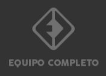

<ion-menu class="appMainmenu" side="start" menuId="first" contentId="MenuPrincipal">
  <ion-content>
    <div class="style-vertical-center">
      
    </div>
    <ion-list lines="full"  mode='md'>
      <ion-item lines="full" routerLink="/principal">
        <ion-label class="ion-padding-start">CREAR PARTIDO </ion-label>
        <ion-icon name="chevron-forward-outline" slot="end"></ion-icon
      ></ion-item>
      <ion-item routerLink="/misequipos">
        <ion-label class="ion-padding-start">MIS PARTIDOS </ion-label>
        <ion-icon name="chevron-forward-outline" slot="end"></ion-icon
      ></ion-item>
      <ion-item routerLink="/misequipos">
        <ion-label class="ion-padding-start">MIS EQUIPOS </ion-label>
        <ion-icon name="chevron-forward-outline" slot="end"></ion-icon>
      </ion-item>
      <ion-item routerLink="/principal">
        <ion-label class="ion-padding-start">MIS LOGROS </ion-label>
        <ion-icon name="chevron-forward-outline" slot="end"></ion-icon
      ></ion-item>
      <ion-item routerLink="/principal">
        <ion-label class="ion-padding-start">BUSCAR VACANTES </ion-label>
        <ion-icon name="chevron-forward-outline" slot="end"></ion-icon>
      </ion-item>
      <ion-item routerLink="/principal">
        <ion-label class="ion-padding-start">BUSCAR EQUIPOS </ion-label>
        <ion-icon name="chevron-forward-outline" slot="end"></ion-icon>
      </ion-item>
      <ion-item routerLink="/principal"
        ><ion-label class="ion-padding-start">CREAR PERFIL ARBITRO </ion-label>
        <ion-icon name="chevron-forward-outline" slot="end"></ion-icon>
      </ion-item>
    </ion-list>

    <div class="style-menu-height">
      <ion-item lines="none" (click)="Cerrar()">
        <ion-label class="ion-text-end style-exit-menu ion-padding-end">
           CERRAR SESIÓN <ion-icon name="exit-outline"></ion-icon>
        </ion-label>
      </ion-item>
    </div>
  </ion-content>
</ion-menu>
